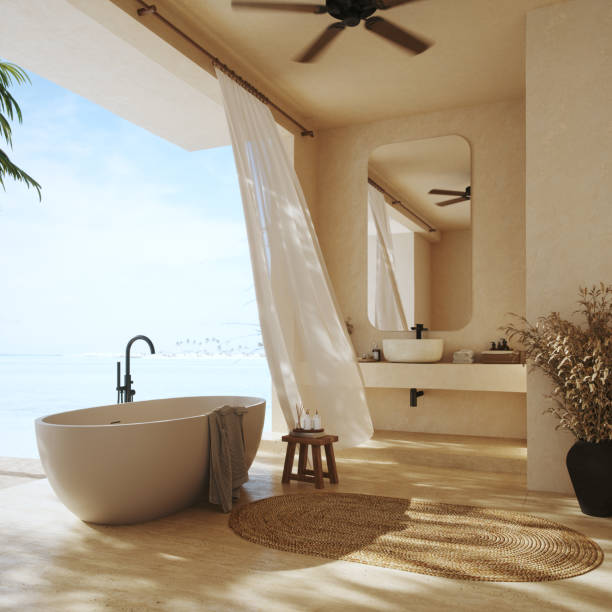
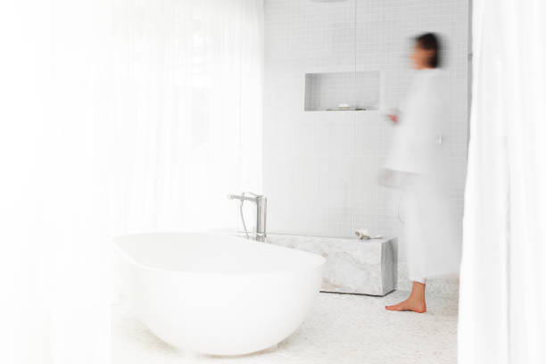

Mooreland Oklahoma
info@freedomwalkintubs.pro
Mooreland Oklahoma
info@freedomwalkintubs.pro

Transform your bathroom with top-rated walk-in tubs in Mooreland Oklahoma . Designed for ultimate convenience, our tubs offer easy entry, fast draining, and therapeutic features, enhancing your daily bathing routine.
Click Here To Call Us (877) 848-1711Looking for the perfect blend of comfort, safety, and style for your bathroom? Our walk-in tubs in Mooreland Oklahoma are the ideal solution. Designed to cater to your specific needs, these tubs provide a safer bathing experience for seniors, individuals with mobility challenges, and anyone seeking a touch of luxury in their home.
Walk-in tubs come equipped with non-slip surfaces, grab bars, and low-step entries, ensuring peace of mind during every bath. Optional features like hydrotherapy jets and heated seating elevate the experience, promoting relaxation and improved circulation. Whether you want to ease sore muscles, reduce stress, or simply enjoy a spa-like retreat at home, our tubs are tailored to enhance your quality of life.
We take pride in offering an extensive range of customizable options to match your bathroom's design and your personal preferences. Our expert team ensures a seamless installation process, minimizing disruptions to your daily routine.
With years of experience serving homeowners across Mooreland Oklahoma we are committed to providing exceptional customer service and durable, high-quality products. Let us help you create a bathroom oasis that combines functionality with modern elegance.
Contact us today for a free consultation and take the first step toward upgrading your bathroom with our walk-in tubs in Mooreland Oklahoma . Experience the perfect balance of safety, comfort, and style!
Residential & commercial Walk In Tubs
Quality services at affordable prices
Immediate 24/ 7 emergency services


When it comes to enhancing the comfort and safety of your home in Mooreland Oklahoma a walk-in tub is the perfect solution. These specially designed tubs offer a luxurious, spa-like experience while ensuring ease of access for individuals with limited mobility. Whether you’re looking to add style or practicality to your bathroom, the right walk-in tub can elevate your space.
Our collection of walk-in tubs comes in a variety of styles and designs to suit every preference. For modern Mooreland Oklahoma homes, sleek, contemporary models with minimalistic features and advanced technology provide both comfort and aesthetic appeal. If you prefer a more traditional look, our classic walk-in tubs blend seamlessly with timeless bathroom designs, offering comfort and style without compromise.
Some models come equipped with built-in hydrotherapy jets for a soothing massage experience, while others feature easy-to-use controls, anti-slip floors, and safety grab bars. These design elements ensure a safe, relaxing bath every time. Additionally, the tubs’ customizable options, including color finishes and size configurations, allow for a perfect fit in any bathroom.
Investing in a walk-in tub for your Mooreland Oklahoma home not only improves your bathroom's accessibility but also boosts the value and overall appeal of your property. Choose a walk-in tub style that aligns with your needs and aesthetic preferences and enjoy a safer, more comfortable bathing experience.
Residential & commercial Walk In Tubs
Quality services at affordable prices
Immediate 24/ 7 emergency services
Elevate the aesthetic of your bathroom with our custom tile surrounds for walk-in tubs, designed to fit any style preference. Our team specializes in creating stunning tile designs that complement your new walk-in tub, offering a luxurious finish that will make your bathing space a focal point in your home.
Tile surrounds provide not only a beautiful design element but also enhance the functionality of your bathroom. They are easy to clean, durable, and can be customized in numerous colors and patterns to match your taste.
By choosing our services you gain access to skilled craftsmanship combined with quality materials. Our installation experts will work with you throughout the design process to ensure a perfect fit for your walk-in tub, creating an inviting and stylish bathing environment.

Safety is our top priority, and Safe Step walk-in tubs are designed with innovative safety features to prevent slips and falls during bath time. With low thresholds and built-in grab bars, these tubs provide easy entry and exit, ensuring peace of mind for both users and their families.
In Mooreland Oklahoma we focus on creating a safe bathing environment for everyone. Our Safe Step walk-in tubs come with slip-resistant surfaces and adjustable seating options that make bathing safe and enjoyable, supporting your independence.
By choosing our services, you can trust in our commitment to delivering safety and quality. Our specialists conduct thorough assessments of your needs and facilitate a seamless tub installation process, offering ongoing support and maintenance that guarantees your safety for years to come.

The therapeutic benefits of walk-in tubs cannot be understated—offering a sanctuary for relaxation, pain relief, and wellness. Our therapeutic walk-in tubs are designed to provide users with hydrotherapy options that promote healing from chronic pain, arthritis, muscle tension, and more, all in the comfort of home.
These tubs can include features such as adjustable jets that target specific sore areas of the body, customizable temperatures, and optional aromatherapy enhancements. These benefits can significantly improve your overall quality of life, allowing you to enjoy the relaxation and rejuvenation that comes with regular soaking.
Choosing us in Mooreland Oklahoma means enlisted professionals who understand the importance of therapeutic bathing. We guide you through our wide selection of options and provide top-notch installation services, ensuring your comfort and satisfaction with your new therapeutic walk-in tub.

We believe that everyone deserves access to safe and comfortable bathing solutions, which is why we offer various walk-in tub financing options . Our flexible financing plans are designed to accommodate a range of budgets, making it easier for homeowners to invest in the safety and luxury they deserve without compromising their financial stability.
By choosing our financing options, you’re taking the first step towards enhancing your home’s comfort and safety in a way that fits your financial situation. Our knowledgeable team is here to guide you through the financing process, answering any questions you may have and ensuring you find a solution that works for you. Experience the peace of mind that comes with accessible financing for your walk-in tub installation.

Walking the line between quality and affordability is where we excel. Our affordable walk-in tub solutions are crafted without compromising safety, accessibility, or style. We believe that everyone deserves to experience the luxury and safety of a walk-in tub, which is why we provide a range of options that fit every budget.
, our affordable walk-in tubs come with various safety features and styles, ensuring you find the ideal solution for your specific needs and budget constraints. By supplying high-quality products at competitive prices, we empower individuals to prioritize their safety without financial strain.
Choosing us means you partner with experts dedicated to providing exceptional value. From consultation to installation, our team ensures you receive an affordable and desirable bathing solution tailored to your expectations.
Keeping your walk-in tub in top condition requires regular maintenance and occasional repairs. Our walk-in tub maintenance and repair services are designed to provide ongoing support, ensuring that your tub remains safe and functional for years to come. Our experienced technicians understand the ins and outs of walk-in tub systems, providing expert solutions tailored to your needs.
Choosing our maintenance and repair services means you’re ensuring the longevity and efficiency of your investment. Our professional team offers prompt and reliable services, from routine maintenance checks to urgent repairs, helping you maintain the comfort and safety you expect from your bathing experience. Trust us for all your walk-in tub support needs in Mooreland Oklahoma .

For many, managing pain effectively is a top priority, and our walk-in tubs in Mooreland Oklahoma provide an ideal solution. With advanced hydrotherapy features, heated seats, and a user-friendly design, these tubs promote relaxation and ease, allowing you to manage your pain effectively through soothing soaks and therapeutic water jets.
By choosing our walk-in tubs for pain management, you're prioritizing your health and wellness. Our dedicated team works closely with each client to ensure their tub is equipped with the features that best address their individual pain management needs. Trust us to provide the finest walking solutions that empower you to take charge of your well-being .

Aging in place is a preferred choice for many seniors who desire to remain in the comfort of their own homes as they age. Our walk-in tubs provide essential features that facilitate aging in place, promoting safety, accessibility, and comfort. With options such as low-entry thresholds, grab bars, and non-slip surfaces, our tubs are designed specifically for the unique safety and care needs of seniors. At Walk In Tubs, we are proud to serve the Mooreland Oklahoma community with products that support an independent lifestyle for aging adults. By choosing us, you gain access to expert advice, quality products, and a commitment to enhancing your bathing experience while ensuring safety and independence.
Years Experience
Expert Technicians
Satisfied Clients
Compleate Projects
At Freedom Walk-In Tubs, we understand the importance of safety, comfort, and independence, which is why we proudly offer top-of-the-line walk-in tubs designed to transform your bathroom experience. Serving Mooreland Oklahoma and surrounding areas, our tubs are engineered to provide peace of mind and a sense of freedom to individuals with mobility challenges or those seeking a luxurious, therapeutic bathing experience.
Our walk-in tubs are built with high-quality materials and advanced features, ensuring durability and safety. Equipped with slip-resistant floors, low-threshold entryways, and easy-to-use controls, our tubs allow for hassle-free access, reducing the risk of slips or falls. Plus, with built-in hydrotherapy jets, air massagers, and heated surfaces, every bath becomes a rejuvenating escape from the stresses of the day.
What sets Freedom Walk-In Tubs apart is our commitment to delivering a personalized experience. We work closely with our customers to understand their unique needs, ensuring the perfect fit for their bathroom space and requirements. Our installation team is highly trained, ensuring each tub is installed with precision and care, providing you with years of reliable service.
We are proud to serve Mooreland Oklahoma and the nearby communities, helping people regain their independence while enhancing their daily bathing routines. If you're looking for a safe, comfortable, and enjoyable bath experience, trust Freedom Walk-In Tubs to deliver exceptional results.
Choose us for quality, care, and the best in walk-in tub solutions across Mooreland Oklahoma .
If you're looking to transform your bathing experience into a serene, luxurious retreat, our luxury walk-in tubs are the answer. Designed with elegance and comfort in mind, these tubs provide the ultimate in relaxation while ensuring accessibility and safety. Our luxury models feature high-end materials, customizable colors, and unparalleled finishes designed to elevate any bathroom aesthetic.
Investing in a luxury walk-in tub not only enhances your bathroom's appearance but also provides therapeutic benefits through hydrotherapy options. With advanced technology and user-friendly controls, you can enjoy customizable water temperatures, massage jets, and soothing air baths—all designed to maximize your comfort. Our team of experts in Mooreland Oklahoma is dedicated to guiding you through every step of the selection and installation process, ensuring your tub fits perfectly into your space.
Additionally, all our walk-in tubs meet rigorous safety standards, making them an exceptional choice for seniors and individuals with mobility challenges. By choosing us, you can expect superior craftsmanship, an unwavering commitment to quality, and reliable customer support before, during, and after installation.
Hydrotherapy has been recognized for its therapeutic benefits, including pain relief and improved circulation. Our hydrotherapy walk-in tubs are designed with state-of-the-art jet technology that harness the power of water to provide a soothing and rejuvenating bathing experience. They stimulate muscle relaxation, relieve joint pain, and promote overall well-being. At Walk In Tubs, we understand the importance of stress relief and physical health and offer tailored solutions that fit your lifestyle. Each tub is designed with safety and ease of use in mind, ensuring that you can enjoy the therapeutic benefits without worry. Our dedicated team is here to help you choose the perfect hydrotherapy walk-in tub for your home, and we pride ourselves on our exceptional customer service and craftsmanship.
Just because your space is limited doesn't mean you have to sacrifice comfort and safety in your bathing experience. Our compact walk-in tubs are designed specifically for small bathrooms, providing all the safety features and comfort of larger tubs without overwhelming your space. At Walk In Tubs, we believe everyone deserves a luxurious bathing experience, even in a small area. Our selection of compact walk-in tubs includes smart storage solutions and a streamlined design that maximizes space while ensuring accessibility and safety. We take pride in our professional installation services ensuring every detail is executed to perfection. Choosing us means you get a tailored solution that fits your unique space without compromising quality or elegance.
Accessibility should never be an afterthought. Our wheelchair-accessible walk-in tubs are designed with mobility challenges in mind, ensuring that everyone deserves the luxury of a soothing bath. These tubs feature wider doors, low thresholds, and non-slip flooring, making them easy and safe to use for individuals who require assistance.
In Mooreland Oklahoma our commitment to inclusivity drives us to provide the best wheelchair-accessible walk-in tubs on the market. Every model features user-friendly designs and safety enhancements that provide peace of mind for both the user and their caregivers. Whether you're upgrading an existing bathroom or looking to create a new accessible space, we have the perfect solution for you.
Choosing our services means having access to knowledgeable professionals who care about your safety and comfort. We focus on durable materials and high-quality installations, ensuring your tub remains a safe haven for years to come.
Experience the ultimate in relaxation with our walk-in tubs equipped with air jet therapy. These innovative tubs provide a gentle yet effective hydrotherapy experience that can soothe sore muscles and improve overall mood. The air jets create a soft, bubbling effect that surrounds your body in warm water, offering a spa-like environment in your own home. Our team at Walk In Tubs in Mooreland Oklahoma understands the importance of mental and physical wellness and is committed to helping you enhance your home with the benefits of air jet therapy. Our knowledgeable staff will help you explore the available options, ensuring you get a walk-in tub that not only meets your safety needs but also enhances your relaxation and wellbeing.
Enjoying a bath can be transformed into a luxury experience with walk-in tubs featuring heated seats. Imagine sinking into warm water with the added comfort of a heated seat, allowing you to relax and unwind. Our walk-in tubs with heated seats offer the ultimate indulgence, particularly in colder weather, ensuring maximum comfort every time you step in. At Walk In Tubs, we focus on merging safety with luxury . Our experienced team is dedicated to guiding you through the selection and installation process, making it easy for you to enjoy a cozy and safe bathing experience. Choosing us means you are investing in your comfort and wellbeing, all while receiving exceptional service tailored to your needs.
Experience faster drainage with our innovative dual-drain system walk-in tubs, specifically designed for enhanced safety and convenience. No one enjoys sitting in a tub full of water while waiting for it to drain, making our dual-drain systems an incredible feature for those who prioritize efficiency.
Our tubs feature two drains strategically placed for quick water removal, allowing for a swift exit from the tub without the fear of slipping or falling. This feature is particularly beneficial for seniors and individuals with mobility challenges who require a safe and prompt bathing experience.
Choosing us for your dual-drain walk-in tub installation means you’re selecting a trusted partner committed to quality and customer satisfaction in Mooreland Oklahoma . Our experienced team will provide expert guidance in selecting the right tub for your needs and will ensure a professional installation with minimal disruption to your home.
Our bariatric walk-in tubs are designed with larger individuals in mind, providing ample space and safety features to ensure a comfortable and secure bathing experience. we recognize the importance of inclusivity and accessibility, which is why our bariatric models are built to accommodate larger body types without compromising on safety.
Each bariatric tub includes reinforced structures, wider seating, and a spacious interior, allowing users to bathe comfortably and confidently. The non-slip surfaces and grab bars are strategically placed to enhance safety and stability during entry and exit from the tub.
When making the decision to install a bariatric walk-in tub, look no further than us for reliable quality and expert service. Our commitment to customer satisfaction means we will work closely with you to ensure your needs are met and exceeded, providing a perfect bathing solution in Mooreland Oklahoma .
Sometimes, the simplest pleasures are the most fulfilling, such as soaking in a warm, relaxing bath. Our soaking walk-in tubs are designed to provide deep, comfortable soaking experiences, ideal for stress relief and muscle relaxation. They offer spacious designs that allow for a soothing soak, making them perfect for anyone seeking tranquility at home. At Walk In Tubs, we focus on creating a warm atmosphere in Mooreland Oklahoma where you can unwind from the hectic pace of life. Our professional team ensures that your soaking tub is installed to perfection, taking into consideration your personal preferences and space requirements. When you choose us, you are investing in quality craftsmanship and understanding the essence of relaxation.
Sharing a moment in the bath can be a beautiful experience, which is why our two-person walk-in tubs are designed for those who desire to enjoy their bathing rituals together. With spacious interiors that allow for both comfort and safety, these tubs combine the luxury of a relaxing soak with the ability to share those moments with loved ones. At Walk In Tubs, we recognize the importance of shared experiences, and our two-person tubs are perfect for couples or anyone who enjoys a companionable bath. Our team will guide you in selecting the perfect tub that balances space, design, and safety for your home, ensuring a joyful bathing experience for both parties involved.
Tailoring your bathing experience starts with our custom walk-in tub installation services. Every home is different, and our professional team specializes in creating solutions that fit your unique space, needs, and budget. Whether you require specific measurements or tailored enhancements, we provide customized installations that transform your bathroom into a relaxing retreat.
In Mooreland Oklahoma we work closely with you to ensure every detail of your custom installation meets your specifications. From personalized design choices to features like non-slip flooring and adjustable jets, we strive to ensure your new walk-in tub meets your specific expectations and comfort levels.
With our expert installation teams, you will receive unparalleled service from consultation to completion. Our years of experience in the industry guarantee a seamless installation process, allowing you to begin enjoying your customized soaking experience in no time.
Transforming your existing bathtub into a walk-in tub can significantly improve safety and accessibility in your home. Our expert bathtub-to-walk-in tub conversion services offer a seamless transition that allows you to enjoy the benefits of a walk-in tub without the need for extensive remodeling.
Our team understands the concerns of homeowners wanting a safer, more accessible bathing option and we provide solutions that can be tailored to your space and style. The conversion process is efficient, minimizing disruption while maximizing safety features such as low thresholds and grab bars.
Choosing us for your bathtub-to-walk-in tub conversion means you are partnering with a team that values quality and customer satisfaction. Our skilled professionals will ensure a smooth transition and support you throughout the entire process, transforming your bathroom into a safer retreat.
As we age, safety and comfort become paramount when it comes to bathing. Our walk-in tubs for seniors are designed with features that prioritize ease of use, offering non-slip surfaces, grab bars, and low-entry thresholds to ensure a safe bathing experience. We understand the unique needs of senior citizens, which is why our walk-in tubs come equipped with additional safety and luxury features tailored for elderly users. At Walk In Tubs, we are dedicated to providing peace of mind and exceptional service ensuring your loved ones can enjoy their bathing experience without fear of accidents. Choosing us means opting for a compassionate approach to health and wellness.
For those who want the best of both worlds, our walk-in tubs with shower combos in Mooreland Oklahoma are the perfect choice. This hybrid solution allows you to enjoy the safety and accessibility of a walk-in tub, with the added convenience of a shower feature. With our walk-in tub showers, transitioning from a bath to a shower is seamless and safe.
By choosing our walk-in tubs with shower combos, you’re opting for versatility and safety. Our installation team will ensure that every element of your new fixture is configured to maximize functionality and safety. We pride ourselves on our attention to detail and commitment to customer satisfaction, making us the top choice for walk-in tub solutions . Experience the ease of use and safety with our innovative designs.
Sustainability matters, and our eco-friendly walk-in tubs reflect a commitment to protecting the environment while promoting wellness. Our tubs are designed with energy-efficient features, water-saving technology, and eco-friendly materials, allowing you to enjoy a luxurious bathing experience without compromising your values.
Choosing our eco-friendly walk-in tubs means you’re contributing to a healthier planet while enhancing your home’s comfort and safety. Our team is dedicated to providing sustainable solutions without sacrificing quality or functionality. Trust us to deliver an environmentally responsible bathing option that keeps you and the planet in mind.
For places where safety and accessibility are paramount, especially in public facilities and homes of seniors or individuals with disabilities, ADA-compliant walk-in tubs are essential. These tubs are designed with specific features such as grab bars, low thresholds, and adjustable spray fixtures that comply with the Americans with Disabilities Act. At Walk In Tubs, our team is dedicated to providing safe bathing solutions that uphold the highest standards of accessibility. We ensure you receive a product that meets your needs and complies with relevant regulations, providing peace of mind for you and your loved ones. When you choose us, you’re making a commitment to safety and dignity for all.
For homeowners in need of quick, effective solutions, our fast-install walk-in tubs in Mooreland Oklahoma provide a convenient answer without sacrificing quality. Designed for easy and efficient installation, these tubs allow you to transform your bathroom in no time, ensuring safety and accessibility with minimal disruption to your home.
Choosing our fast-install walk-in tubs means you won’t have to wait long for the comfort and security of a safe bathing environment. Our experienced installers will handle the process quickly and efficiently, allowing you to enjoy your new tub sooner. With our commitment to quality and customer care, you can trust us to deliver fast, reliable service that meets your needs.
Installing a walk-in tub in your home in Mooreland Oklahoma can provide numerous advantages, especially for individuals looking for enhanced safety, comfort, and accessibility. One of the top benefits is the improved safety it offers. Walk-in tubs are designed with low thresholds, making it easy for people with mobility challenges to enter and exit the tub without the risk of slipping or falling. This makes them a great choice for seniors or individuals with disabilities.
In addition to safety, walk-in tubs provide therapeutic benefits. Many models come with built-in hydrotherapy features, such as jets that provide soothing massages, improving circulation and relieving sore muscles. This can be particularly helpful for those suffering from arthritis, muscle pain, or stress, offering an affordable alternative to expensive spa treatments.
Walk-in tubs also enhance independence. For those who may have difficulty using traditional bathtubs or showers, a walk-in tub allows for an enjoyable and easy bathing experience, reducing the need for assistance from caregivers.
Another benefit is the increased home value. Installing a walk-in tub can make your home more appealing to a broader range of buyers, especially those seeking homes with accessibility features. This could lead to a higher resale value in the future.
Investing in a walk-in tub in Mooreland Oklahoma not only promotes safety and comfort but also provides long-term value for your home.
Mooreland is a town in Woodward County, Oklahoma, United States, 10 miles (16 km) east of the city of Woodward, the county seat. The population was 1,190 at the 2010 census. Mooreland lies in a valley approximately 5 miles (8.0 km) north of the North Canadian River. This area of shallow-water land lies at an altitude of 1,900 feet (580 m).
Freedom Walk In Tubs offers a wide range of walk-in tubs, including soaker tubs, hydrotherapy tubs, and bariatric tubs, in Mooreland Oklahoma .
Absolutely! Freedom Walk In Tubs provides a variety of customization options to match your preferences and needs in Mooreland Oklahoma .
Yes, modern walk-in tubs from Freedom Walk In Tubs are energy-efficient and designed to minimize utility costs .
Yes, Freedom Walk In Tubs offers models with quick-drain systems for added convenience .
Walk-in tubs are low-maintenance and built to last. Freedom Walk In Tubs offers durable products with easy cleaning options in Mooreland Oklahoma .
Freedom Walk In Tubs provides expert consultations to help you choose the perfect walk-in tub for your needs in Mooreland Oklahoma .
Most walk-in tubs are designed to fit standard bathtub spaces. Freedom Walk In Tubs can assess your bathroom and provide recommendations.
Yes, Freedom Walk In Tubs specializes in bathtub-to-walk-in tub conversions for homeowners .
Yes, Freedom Walk In Tubs provides flexible financing options to make your walk-in tub installation affordable in Mooreland Oklahoma .
Yes, Freedom Walk In Tubs frequently offers promotions to make walk-in tubs more affordable for customers .
The process involves removing your old tub, making any necessary adjustments, and installing the walk-in tub. Freedom Walk In Tubs ensures a seamless process .
The cost varies based on the features and installation requirements. Contact Freedom Walk In Tubs for a free estimate tailored to your needs .
Yes, hydrotherapy features in walk-in tubs can alleviate arthritis pain and improve joint mobility for residents .
Walk-in tubs provide safety, comfort, and therapeutic benefits, especially for seniors or individuals with mobility challenges. Freedom Walk In Tubs offers high-quality solutions to enhance your bathing experience .
Walk-in tubs enhance safety, comfort, and property value, making them a great investment for homeowners .
Yes, Freedom Walk In Tubs offers warranties to ensure peace of mind and protect your investment in Mooreland Oklahoma .
Walk-in tubs provide hydrotherapy, which can help relieve pain, improve circulation, and reduce stress for residents .
Cleaning is simple with non-abrasive cleaners and regular maintenance. Freedom Walk In Tubs provides guidance for proper care .
Yes, walk-in tubs are versatile and can be enjoyed by people of all ages in Mooreland Oklahoma .
Yes, walk-in tubs from Freedom Walk In Tubs are designed to meet ADA standards, ensuring accessibility .
Yes, walk-in tubs are equipped with safety features to minimize fall risks, making them ideal for residents .
Look for safety features, therapeutic jets, quick-drain systems, and comfortable seating. Freedom Walk In Tubs offers customized options.
Installation typically takes one to two days, depending on your bathroom setup. Freedom Walk In Tubs ensures quick and professional service .
Yes, Freedom Walk In Tubs offers walk-in tubs with hydrotherapy features to improve your bathing experience .
Standard walk-in tubs vary in size, but Freedom Walk In Tubs can provide options that suit your bathroom in Mooreland Oklahoma .
Yes, Freedom Walk In Tubs offers compact designs that fit perfectly in small bathrooms across Mooreland Oklahoma .
Modern walk-in tubs are designed to be water-efficient without compromising functionality. Freedom Walk In Tubs offers eco-friendly options in Mooreland Oklahoma .
Contact Freedom Walk In Tubs today to schedule a free in-home consultation .
Yes, walk-in tubs are designed with safety features like grab bars, non-slip surfaces, and low thresholds, making them ideal for seniors in Mooreland Oklahoma .
Professional installation is recommended to ensure safety and functionality. Freedom Walk In Tubs provides expert installation in Mooreland Oklahoma .
I couldn't be more pleased with my experience with Freedom Walk In Tubs in Mooreland Oklahoma [State Abbreviation]. The walk-in tub is not only easy to use but has made me feel much more independent. Their team was friendly, knowledgeable, and left everything clean and tidy.
Profession
I am so thankful for the team at Freedom Walk In Tubs in Mooreland Oklahoma [State Abbreviation]. They made the whole process effortless and installed the perfect walk-in tub for my needs. I now enjoy a safe and relaxing bathing experience every day. Highly recommended!
Profession
Freedom Walk In Tubs exceeded my expectations in Mooreland Oklahoma [State Abbreviation]. The installation process was quick and clean, and the tub is exactly what I needed. It’s safe, comfortable, and has added a new level of independence to my daily routine. Fantastic service!
Profession
Mooreland OK Walk In Tubs Pros
(877) 848-1711
info@freedomwalkintubs.pro
09.00 AM - 09.00 PM
09.00 AM - 12.00 PM